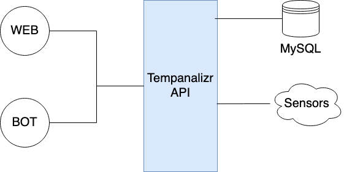
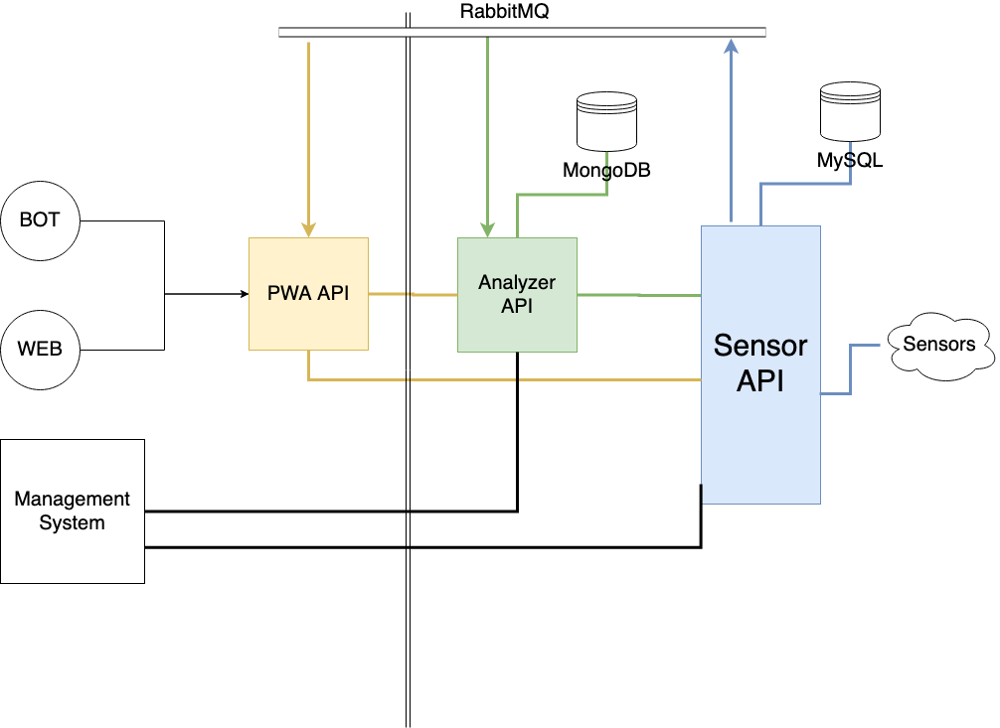

Tempanalizr v2.0
En este documento se define el objetivo y proceso para pasar de la versión actual de tempanalizr a una versión más moderna y mejorada (vamos a llamarla v2.0). Los objetivos de esta nueva versión se describen en el siguiente apartado.
Objetivo
Primero, vamos a presentar la versión actual:

Tenemos como
“piedra angular” una API, que se encarga de un análisis de datos muy simple, de comunicarse con los sensores y recopilar datos de los sensores cada un tiempo determinado. A esta API se conectan tanto la aplicación web (en vue.js) que permite ver de un vistazo rápido el estado actual de los sensores, un historial de qué datos han recogido durante las últimas horas y, además, tiene un modo de
“análisis” muy básico que permite obtener los datos del sensor que se quiera en el rango de tiempo que se quiera. Por otro lado tenemos un chatbot de telegram que avisa cuando hay problemas en los sensores (conectividad o de mediciones)
Los problemas que se tiene con el sistema actual son:
- El sistema no permite recoger datos de distintos sensores a distintos intervalos. Ahora no es problema, pero cuando se añadan los nuevos sensores de nivel de agua de bombonas, tomar mediciones cada hora es demasiado tiempo.
- La BBDD esta mal. Además hay que adaptarla para permitir guardar los intervalos de que cada sensor.
- Las posibilidades de análisis de datos es muy limitada
- Modificar la configuración de los sensores (ip, qué reportes generan…) se hace tedioso, requiere lanzar consultas a BBDD de forma manual.
Para solucionar todos esos problemas, además de adaptar el sistema a las nuevas necesidades, se ha pensado en este sistema de microservicios:

- Sensor API: Nuestra nueva “piedra angular” del sistema. Es un simple microservicio que se encarga de gestionar qué sensores hay en el sistema (los puede añadir, borrar y modificar) permite comunicarse con ellos, determinar qué reportes genera (además de poder modificarlos) y se encarga de recoger los datos de los sensores, cada uno con el intervalo que se necesite. Probablemente se hará en GO
- Analyzer API: Un microservicio que, teniendo acceso directo a la BBDD con los datos generados por el Sensor API pueda recogerlos y realizar tareas de estadística y análisis. Probablemente hecho en R, Python o Julia.
- PWA API: Una pequeña API puente, adaptada a las necesidades de la web a la que sirve. Es opcional, sólo si las llamadas directas a las otras APIs son más complejas de lo debería. Hace de fachada del sistema, además de permitir que las otras dos APIs no sean públicas. Probablemente en Node.JS
- WEB: Se trata de la web actual, pero sin los paneles que ahora se conocen como analytic mode. Pensado para un vistazo rápido de la situación del sistema. Se quiere hacer que sea una PWA para poder enviar pull notifications (sobre todo se quiere enviar notificaciones de cuándo se debe vaciar las bombonas).
- BOT: Es el mismo chatbot de telegram actual (aviso de incidencias del sistema), añadiendo la nueva funcionalidad de las bombonas.
- Management System: Es una aplicación MPA (de las que se renderizan en backend), que, por un lado, da una interfaz gráfica para gestionar la configuración de los sensores y por otro permite mostrar las estadísticas y análisis producidas por el sistema (de una forma mucho más detallada que la PWA). Tendrá un sistema de usuarios con dos tipos, los administradores y los de análisis. Probablemente en PHP.
Hay que tener en cuenta las dos líneas paralelas y transversales al dibujo. Indican que a su derecha son APIs no públicas (no accesibles desde fuera), mientras que las de la izquierda sí son accesibles.
ROADMAP